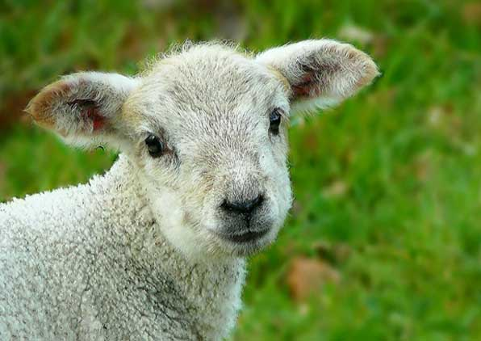

A nevem Kovács Levente
-

-
Hobbiaim közé tartozik a rajzolás, 3D nyomtatás és a videóvágás. Mindhármat nagyon szeretem csinálni, de a 3D nyomtatás áll a legközelebb a szívemhez, mivel bármilyen 3D modellt fizikai tárggyá tudok alakítani pár órán belül és ez szerintem az egyik legjobb dolog a Földön.
-
Az én kedvenc sportom a sportlövészet. Pár éve jártam edzésekre, de abba nem hagytam. Viszont újra el akarom kezdeni, mivel nagyon szórakoztató.
- 
-
A kedvenc állatom a bárány, mivel van egy bárány plüssöm amivel kis koromban nagyon sokmindenen túlestem és nagyon a szívemhez nőtt.